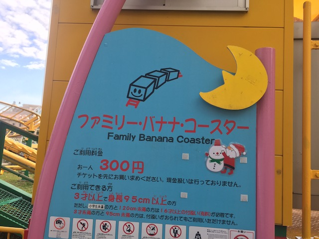

| |
.
Family Banana Coaster Review

We're here at Yokohama Cosmoworld. For their kiddy coaster, they have the Family Banana Coaster. That already, is really cool. Not the ride itself. It's a kiddy coaster. And even by kiddy coaster standards, this is pretty mediocre. No, what makes this interesting is the name. Family Banana Coaster. I'm not sure why, but that name alone just really amuses me. Kind of like Apple Zapple, except at least this is a kiddy coaster. Anyways, we're here to credit whore. So let's get going. Hop in the cars, that are clearly not meant for people our size. I'm pretty sure the workers are judging us for riding, but they accepted the yen, we're getting this credit. Buckle the seatbelts, and we're off! Go up a tiny little lifthill, and....dip down. All right. we're moving. Go around a turn, slightly banked. then dip down again. Yay. Rise up, and FAKE HELIX OF DEATH!!! ON A KIDDY COASTER!!! That is NOT intense at all. But....meh. It's a helix. Go around a banked turn, and....we're back in the station. And we go around again, because this kiddy coaster likes to give us two laps. I already have the credit, but just shut up and do it again. Ugh. And that's the Family Banana Coaster. A mediocre kiddy coaster that barely fits us. But....at least we got a credit. And it has an amusing name. I won't ride it again. Obviously. But I'll happily walk past it again witb a smile at the name walking through Yokohama Cosmoworld again.
2/10
Location: Yokohama Cosmoworld
Opened: 2007
Built by: Senyo Kogyo
Last Ridden: November 14, 2018
Family Banana Coaster Photos

Home
|